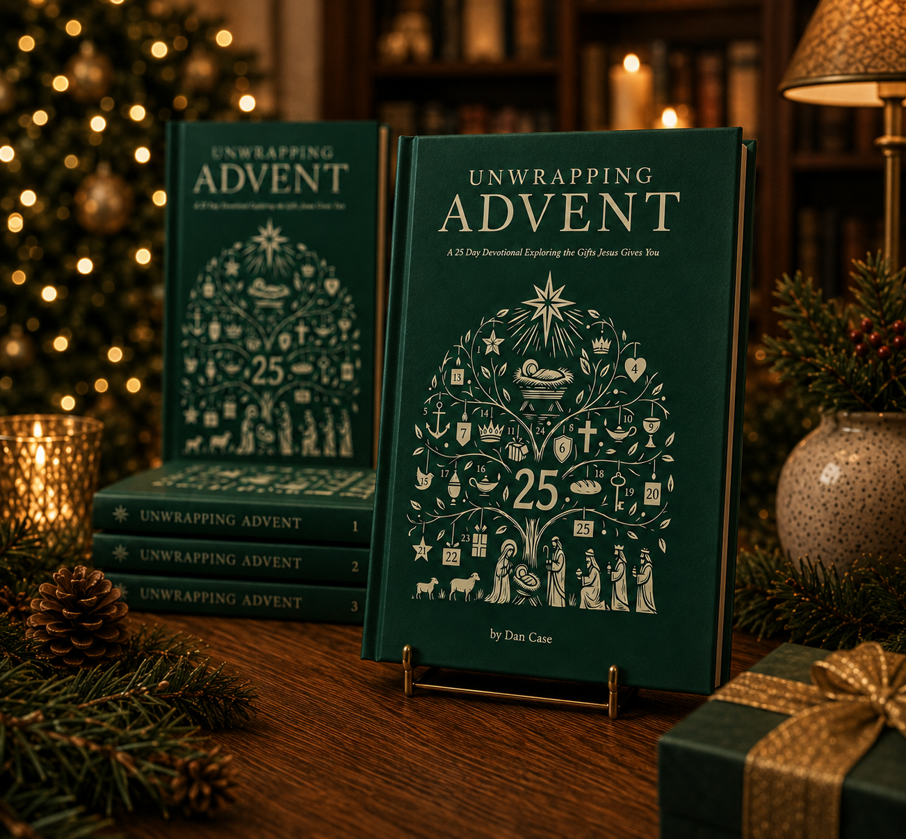
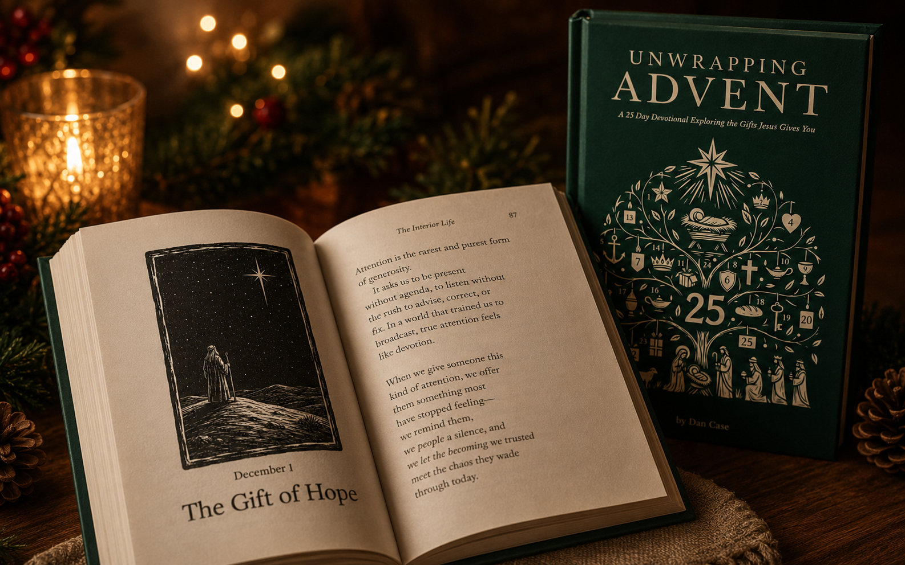
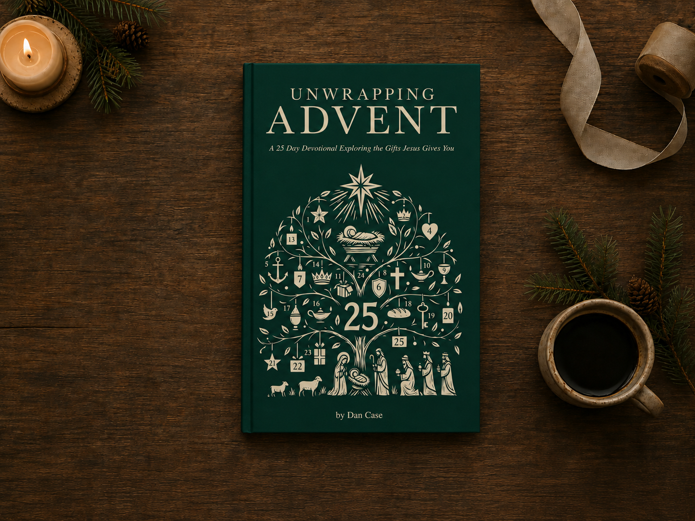

Unwrap the gifts Jesus gives you.
Slow down through December with 25 Scripture-rooted reflections on hope, grace, peace, forgiveness, God’s presence, and the greatest gift beneath them all: Jesus Himself.

“What we are looking for is not the feeling. It is the Person behind it.”From Unwrapping Advent
Christmas can be full of beautiful things and still leave us feeling like we missed something.
Every year we decorate, shop, plan, gather, and count down. The season can become so full that the Person at the center of it quietly slips to the edges.
Unwrapping Advent is a 25-day devotional created to help you slow down and look again. Each day “unwraps” a gift found in who Christ is and what He has done—gifts like hope, promise, faith, grace, peace, forgiveness, and His presence.
The journey begins with God’s promises, moves toward the arrival of Christ, follows His nearness into ordinary life, and looks ahead to the cross, resurrection, and the future secured in Him. The goal is not to manufacture a better Christmas mood. It is to receive what lasts.
A daily rhythm that gives December room to breathe.
Each reading is designed to be substantial enough to stay with you and simple enough to become part of a quiet morning, evening by the tree, family Advent rhythm, or personal devotional time.

Thoughtful writing. Scripture. Prayer. Original art.
The devotional combines personal stories with biblical reflection to help familiar truths land with fresh weight in the middle of real life.
- A focused theme for each day
- Scripture woven into the reflection
- Original black-and-white illustrations
- A closing prayer that turns the reading toward God
Make a little room for what matters most.
Advent has a way of slowing a rushed season down. A chair. A warm drink. A few pages. A prayer. The book is made to become part of that rhythm—and to sit beside the tree all month.
One book. Twenty-five invitations to slow down.
25 daily devotionals
One reading per day for December 1 through Christmas Day.
Original illustrations
Woodcut-inspired black-and-white art created for the devotional.
Three ways to read
Kindle, paperback, and hardcover—read it your way or give it as a gift.
Hope-filled substance
Scripture, reflection, and prayer that point again and again to Christ.
What readers are saying.
“This advent book is a beautiful reminder of what Christmas is truly about.”
Amazon review
“I loved this book.”
Amazon review
“It's gospel-centered, it's well-paced, and it turns your eyes and your heart to focus on Jesus”
Amazon review
“In a time of year that can be overwhelming with the hustle and bustle, his devotions would be a great addition to help you slow down and savor the season.”
Amazon review
"I will be bringing this to our family this year and this will be what we read each night. "
Amazon review

About this edition
Questions about an order or a bulk purchase? Reach out to the publisher at hello@tomeify.com.
Which formats are available?
Three: Kindle, paperback, and hardcover. All three are on the same Amazon listing—choose your format there.
Where can I buy it?
Every button on this page goes to the book’s Amazon listing, where current pricing and delivery estimates are shown.
When should I begin reading?
The main devotional journey runs December 1 through December 25, one reading per day, leading into Christmas Day.
Is it meant for individuals or families?
Both. The writing works as a personal devotional, while the 25-day structure also makes it easy to build into a household Advent tradition or small-group rhythm.
Can I give it as a gift?
Yes. The paperback and hardcover both work well as gifts, and Amazon can ship directly to the recipient. Order early in the season to have the book in hand before December 1.
Give a book that opens something new every day.
Bring Unwrapping Advent into your home this December—or give it to someone you love as an invitation to slow down, draw near, and rediscover the gifts Christ has already given.